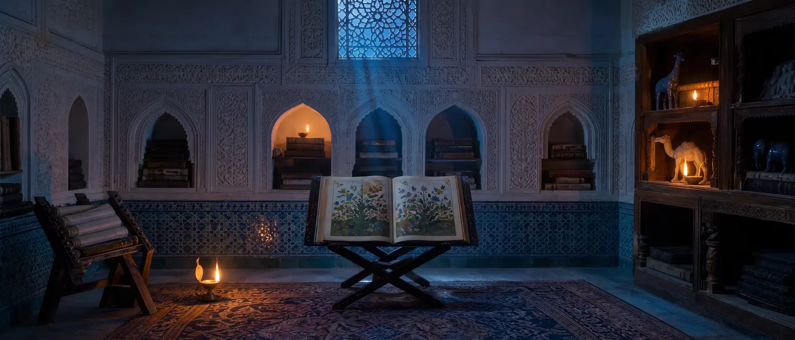

阿德利与苏利
九至十世纪的两位巴格达大师，他们的著作保存了沙特兰兹的规则、开局和棋题——以及带骰子的长盘象棋。

阿德利·鲁米——“来自鲁姆”，即出身安纳托利亚——是哈里发瓦西克（842–847）时期巴格达最强的棋手：在棋手的最高等级阿利亚特中，当时只有他一人。847年，在哈里发穆塔瓦基勒面前，年迈的阿德利在一场对抗赛中输给了拉齐，后者由此进入最高等级。他的《象棋书》（约842年）没有流传下来，但后来的手稿转述了它：长盘象棋和十格象棋的记述、开局阵型和棋题都来自那里。人们把棋手等级制度和最早的棋子价值评估归于他和苏利。
苏利
阿布·伯克尔·穆罕默德·伊本·叶海亚·苏利（约880–约946）生于戈尔甘一个突厥血统的家庭：他的曾祖父是统治者苏勒·特勤。他是廷臣、史学家、藏书家和未来哈里发拉迪的老师，并以象棋闻名：902至908年间，他在哈里发穆克塔菲面前战胜了在位的冠军马瓦尔迪；据伊本·哈利坎说，他生前“像苏利那样下棋”就已意味着下得出色。他下盲棋、教棋，并写了两卷本《象棋书》，其中有塔比亚开局、棋题，以及已知最早的马步遍历棋盘的记述。
他的结局令人伤感：940年拉迪去世后他失宠，又因关于阿里的不慎言论引起风波而被迫躲藏，死于巴士拉。他的学生拉吉拉吉——“口吃者”——继承了事业：他的曼苏巴之书把开局分析到第四十回合。
这对我们为何重要
通过追溯到阿德利和苏利的手稿，我们知道了游戏花园里所下的沙特兰兹的规则，以及带骰子的长盘象棋的规则。关于象棋是否被允许的圣训传统也经由苏利传到我们手中：他像收集圣训那样，连同传述链一起收集了它们。